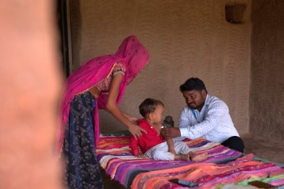

Khushi Baby strengthens public health systems by closing the gap between data, insights, and action — particularly at the last mile of service delivery.
Khushi Baby operates as a technical partner to ministries of health — working in a build-operate-transfer model that scales through existing government systems rather than building new ones alongside them.
This keeps operating costs low, builds local ownership at every level of government, and produces a model that the state can adopt, fund, and run independently.
Our growth follows government demand, unmet need, and invitation from partners already working in a geography. Where we operate, we aim to go deeper before we go wider.
Approach
Build · Operate · Transfer
Partners
State and national ministries of health
Framework
Data · Insights · Action
Presence
Rajasthan · Maharashtra · Karnataka
We deploy a technology platform (CHIP) and an embedded process (Health Action Centers) to complete the Data–Insights–Action feedback loop.

A unified, offline-ready platform co-designed over 250,000 field hours. CHIP consolidates the entire work requirement of frontline health workers across all primary care programs into a single interface — reducing 800+ indicators across 12 national health programs.
MORE ABOUT CHIPA lean, multidisciplinary unit embedded within government health departments. HACs identify the primary health priorities within a geography, conduct a structured gap analysis across the DIA cycle, then co-design, implement, and iteratively refine targeted interventions with government and local partners.
MORE ABOUT HACThe knowledge gained from running our model gets transferred onto a playbook to replicate at scale. This allows us to adapt it to multiple health programs: reproductive, maternal, neonatal and child health and nutrition, non-communicable diseases, tuberculosis, infectious and vector-borne diseases, immunizations, climate and health.
The goal is to make the playbooks versatile enough to be used effectively across various health areas over time, as required.